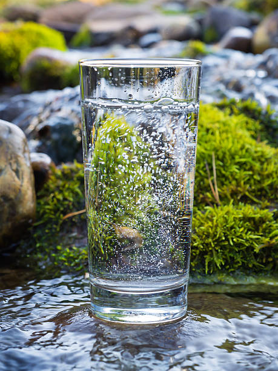
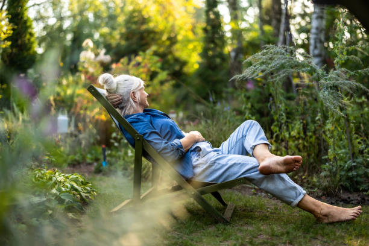

Cuida tu bienestar todos los días
Aquí encontrarás algunos consejos sencillos que puedes incorporar a tu vida diaria para cuidar tu bienestar.
1. Come alimentos variados
Procura incluir diferentes alimentos, como frutas, verduras, cereales, leguminosas y fuentes de proteína. La variedad ayuda a obtener diferentes nutrientes.
2. Toma agua natural
Ten agua disponible durante el día y bebe con regularidad, de acuerdo con tus necesidades. El agua ayuda a mantener el cuerpo hidratado.

3. Mantén una alimentación equilibrada
Procura comer de manera suficiente y variada. Evita sentir culpa por los alimentos que disfrutas y escucha las señales de hambre y saciedad de tu cuerpo.
4. Realiza actividades que disfrutes
Caminar, bailar, jugar o andar en bicicleta son ejemplos de actividades que pueden formar parte de una rutina activa.
5. Descansa lo suficiente
Intenta mantener horarios de sueño regulares. Descansar es importante para recuperar energía y sentirte mejor durante el día.
6. Cuida tu bienestar emocional
Dedica tiempo a tus pasatiempos, habla con personas de confianza cuando lo necesites y recuerda que cada persona es diferente.
